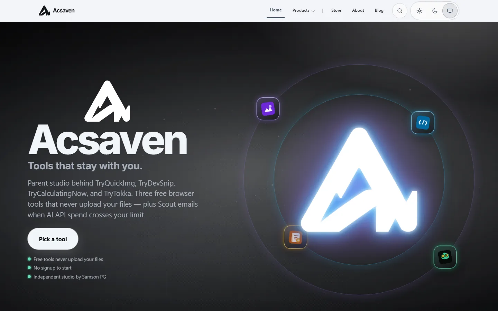

Visual archive
Acsaven
Studio hub for the Try family — products, status, and docs from one place.


Parent studio
Home for TryTokka and the free utilities.
Product discovery
Find what shipped and what is live.
Founder-built
Independent studio by Samson P G.
Doomsday backup: local images + static shell so the product still has a face if paid hosting ends.
© 2026 Samson P G · Offline archive